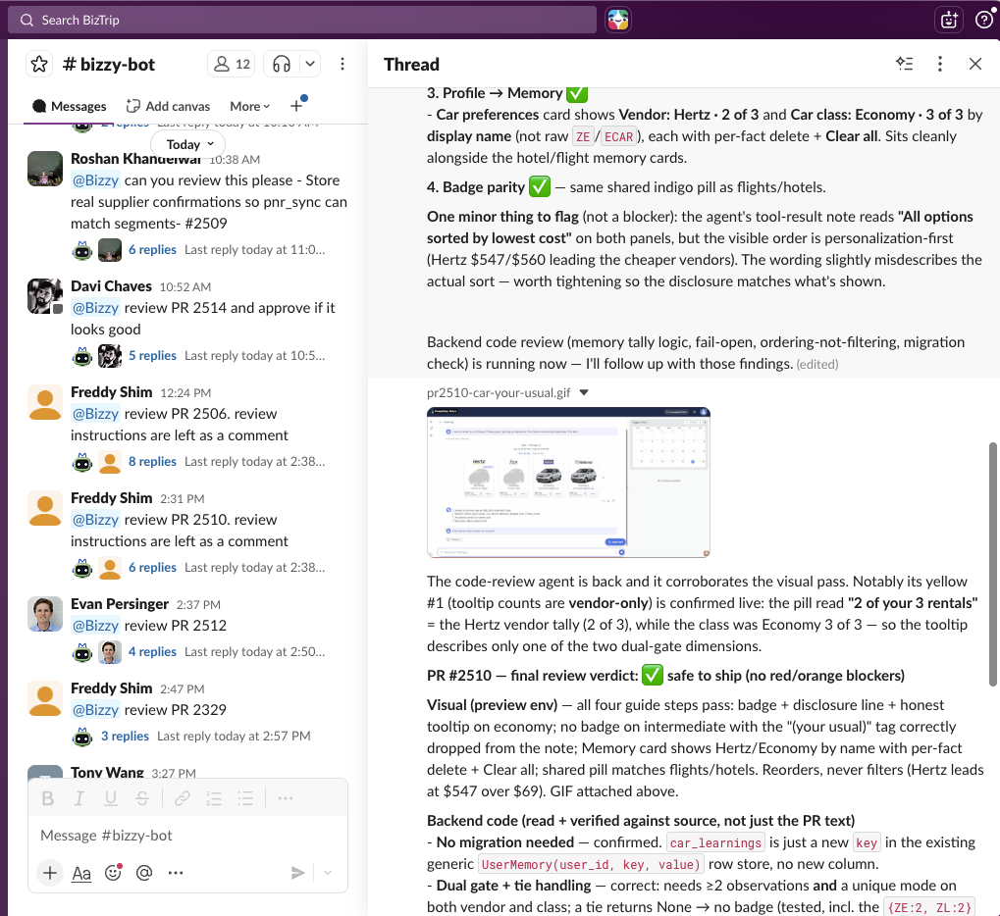

Deploying cloud agents for your team
The way we build software has radically changed in the era of coding agents.
 Scott Persinger·
·
Scott Persinger·
·
For months now at Biztrip we have moved to what I think of as a “cloud agents native” software development workflow.
In this flow, developers work with coding agents locally, then push PRs to Github. But then we use our “cloud agent” to review the PR, including acceptance testing of features and changes.
Because our cloud agent understands our app so well, we even have Product Managers building (mostly small) features completely via the agent.

The agent lives in Slack
Our primary agent is a Claude Code instance running on a dedicated machine. We create a “bridge” which connects that Claude Code instance into Slack where anyone from the team can interact with it.
The latest version of the bridge is here: https://github.com/biztrip-ai/slack-acp-bridge
There are instructions in the repo for getting setup - the process is quite easy but requires you have perms to create a new Slack app in your Slack workspace.
Setting up your agent
There are a few key steps to getting your coding agent setup:
-
Where will the agent run? We use a dedicated laptop, but its possible to run your agent on a cloud server as well. Having the agent running in the office makes it a little easier to debug its setup.
-
You need to authenticate your agent. If you run
claudemanually on the computer then you can authenticate into a Claude subscription, and the “agent bridge” process described above will pick it up. -
Connect your agent to Github. The best setup is to install the
ghCLI and make sure it is authenticated into Github. (See below about agent ‘identity’). -
Setup other MCP servers (like Jira or whatever) your agent might need.
-
Enable browser use for your agent. We have had the best luck with the
Claude-in-Chromeextension, but you can also use thechrome-devtoolsMCP. The key here is that your agent should be able to run and test your application, not just run all your automated tests (although it should do that too). This is one of the key limitations of most cloud agents today like “Claude Code on Web” - they don’t have a browser to test with. -
Give your agent one of more
SKILLSto specific to your process. We have a skill that explains to Claude how to run and test our primary app, and another skill specific for reviewing PRs. Creating skills gives you much more predictable behavior from your agent. The easiest way to create a skill is to drive Claude in an interactive session to test your app, and then ask it to write a skill that records what it learned.
Agent identity
When you setup Github access for your agent, it’s natural to use YOUR authentication
into Github. This can actually work OK, because you can configure local git to
use your agent’s “name” when it commits to github. These commits will show up attributed
both to the agent and to yourself. In our case, we actually created a dedicated
Github user account for use by our agent, so all work committed is fully attributable
to the agent itself.
Running in the cloud
We ran our first version of our agent locally on a laptop in the office. More recently we’ve been renting a hosted Mac Mini and running our agent there. Running your agent “in the cloud” is easy enough, the harder part is just setting up the remote machine with all the keys and permissions that it needs. If the agent runs in a CAPTCHA on a web page we can login to the desktop and solve it. The browser control is really the biggest limitation with a model of just “run your agent on a VPS somewhere”.
I have been working on a new SKILL intended to make it super easy to run your own cloud agent. Note it is still a work in progress.
Scott Persinger
Co-founder & CTO at BizTrip.ai. Four-time founder, two acquisitions, 25+ years shipping platforms, payments, and AI agents. Email · LinkedIn · GitHub